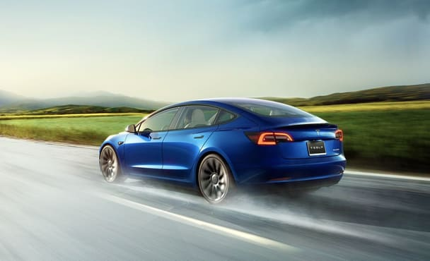
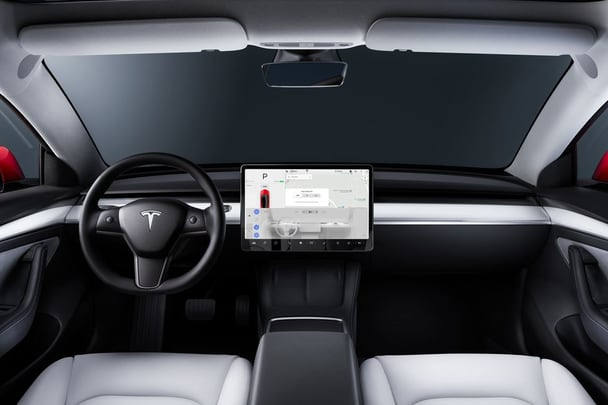

- Overview
- What's New for 2022?
- EV Motor, Power, and Performance
- Range, Charging, and Battery Life
- Fuel Economy and Real-World MPGe
- Interior, Comfort, and Cargo
- Infotainment and Connectivity
- Safety and Driver-Assistance Features
- Warranty and Maintenance Coverage
Overview
With a near ideal blend of performance, driving range, and accessible pricing, the 2022 Tesla Model 3 is an electric vehicle that lives up to the hype. It's fast—especially the Performance trim—and it's agile, which means the Model 3 is an EV that driving enthusiasts like us can get behind. We even named it to our 2022 Editors' Choice list. Driving range is an impressive 358 miles per charge on the mid-level Long Range trim, so it's not necessary to charge the Model 3 every day. It's attractive entry price doesn't unlock the Model 3's full potential, though, and its fit and finish doesn't quite match alternatives such as the Chevy Bolt and Ford Mustang Mach E. Still, there's not a more inexpensive way to park one of Tesla's groundbreaking EVs in your driveway.
What's New for 2022?
Last year's Standard Range model has been renamed Rear-Wheel Drive and given a new kind of battery pack that uses lithium-ion-phosphate instead of nickel-cobalt-aluminum. Despite being less energy dense than the previous battery pack, estimated range for this entry-level model has increased to 272 miles. The Long Range trim also sees a slight uptick in its estimated driving range this year, to 358 miles per charge.
EV Motor, Power, and Performance
As with most EVs, the Model 3 gains speed smoothly and almost silently, with the electric motor providing strong power from a stop. And it's fast—extremely so in some trims. The rear-wheel-drive Long Range model we tested sprinted from zero to 60 mph in 5.1 seconds. The Model 3 Performance rockets to 60 mph in just 3.5 seconds—0.5-second faster than our long-term Model 3 Long Range. Like all Teslas, the Model 3 carries its battery under the floor, resulting in a low center of gravity. This helps it change direction crisply and feel planted and stable in corners. The steering is accurate and well weighted, with three different settings that adjust the level of steering effort. The ride is firm without being harsh; without the noise of a gas-powered engine, however, you do hear plenty of noise inside the cabin as the tires thwack and thrum over pavement imperfections.
Range, Charging, and Battery Life
Three distinct Model 3 trims are offered, each with a different estimated driving range. The Rear-Wheel Drive model is the most affordable, with a claimed range of 272 miles. Upgrading to the Long Range or Performance models increase the Model 3's estimated range to 315 miles for the Performance and an impressive 358 for the Long Range. Of course, this distance isn't easy to achieve, as we've found in our long-term Long Range Model 3 test vehicle. The Model 3 offers several different options for charging: Tesla's network of fast-charging stations called Superchargers, adapters for DC public-charging stations, 240- and 120-volt outlets, and a home-charging station.
Fuel Economy and Real-World MPGe
The various versions of the Model 3 are rated between 113 MPGe and 141 MPGe by the EPA. Our test vehicle, however, managed only 84 MPGe when we took it on our 75-mph highway fuel-economy test. The Model 3 comes standard with aluminum wheels that are covered by plastic aerodynamic hubcaps. We wanted to know how much impact those hubcaps have on the car's driving range, so we tested it and were surprised to find that they helped more than expected. For more information about the Model 3's fuel economy, visit the EPA's website.
Interior, Comfort, and Cargo
We're not exaggerating when we say that the Tesla Model 3 has an interior unlike any other car on the market today. It's shockingly simple inside, with nearly everything controlled by the monolithic touchscreen in the center of the dashboard. The Tesla's low, flat floor makes for a spacious and airy feel inside. The front seats are supportive and comfortable, but the rear seats are cramped and uncomfortable; don't expect adults to be able to spend time in them. Folding the 60/40 split-folding rear seats is simple and expands the trunk considerably. The Model 3's seatbacks fold flat, too, providing an uninterrupted cargo floor for hauling larger items. With the rear seats folded, the Model 3 provides enough room for 15 carry-on suitcases. There are also generously sized bins and cubbies throughout the cabin.
Infotainment and Connectivity
Navigation, Bluetooth, and USB connectivity are standard, but the Model 3 is oddly not available with AM radio or SiriusXM satellite radio. Several internet-streaming radio options are standard. It also can't be equipped with Android Auto or Apple CarPlay. To make charging-station layovers more bearable, the Model 3 offers plenty of entertainment options on its central display, including Netflix, YouTube, and a host of arcade games.
Safety and Driver-Assistance Features
Although we question whether the name Autopilot might be misleading, the driver-assist system has one of the best feature sets in the industry, with smooth operation and impressive capabilities such as automatic lane changes. For more information about the Model 3's crash-test results, visit the National Highway Traffic Safety Administration (NHTSA) and Insurance Institute for Highway Safety (IIHS) websites. Key safety features include:
- Standard automated emergency braking
- Standard lane-departure warning
- Standard adaptive cruise contro
Warranty and Maintenance Coverage
Tesla's overall warranty coverage is among the longest in the EV segment, but it's disappointing that the coverage doesn't include corrosion protection. The Long Range model includes an additional 20,000 miles on the coverage period of its battery and drive components.
- Limited warranty covers four years or 50,000 miles
- Powertrain warranty covers eight years or 100,000 miles
- No complimentary scheduled maintenance